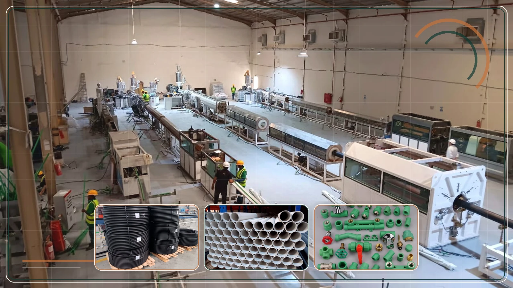
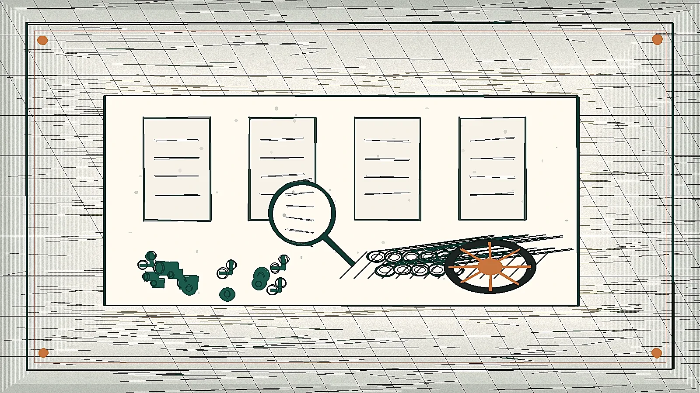
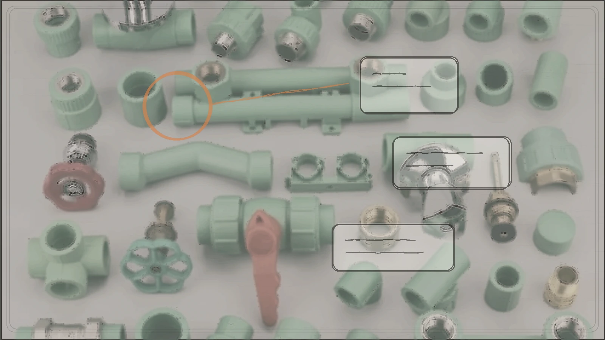
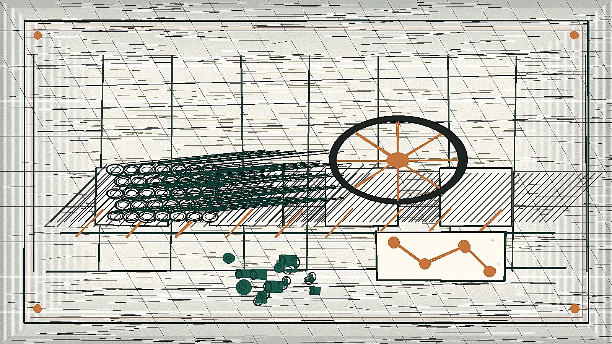

01
سبب المشروع
لماذا نحتاج قسم تسويق واضح؟
المصنع قوي، لكن يجب أن يظهر ذلك في الموقع والمحتوى وطلبات العملاء والمتابعة.

قوة المصنع يجب أن تكون واضحة للعميل.
توفر المنتج، السعر، سرعة التوريد، وربحية التاجر.
اعتمادات، مواصفات، كتالوجات، وطلبات عرض سعر.
المحاور الرئيسية
سبب المشروع
المصنع قوي، لكن يجب أن يظهر ذلك في الموقع والمحتوى وطلبات العملاء والمتابعة.

مسارا السوق
الموزع يهمه التوفر والربح، والمقاول يهمه الاعتماد والمواصفة وسرعة عرض السعر.

الموقع والأنظمة
موقع يساعد العميل على معرفة المنتج، تحميل الكتالوج، وطلب عرض سعر بسهولة.

محركات البحث
تهيئة الموقع ليظهر في Google وBing/Edge ونتائج البحث المدعومة بالذكاء الاصطناعي.

الكلمات المستهدفة
تحديد كلمات المنتجات والشراء والمواصفات لكل نوع عميل: موزع، مقاول، أو استشاري.

السوشيال ولينكدإن
محتوى يشرح المصنع والمنتجات ويصل للمقاولين والموزعين بلغة مفهومة.

الإعلانات
حملات بحث وسوشيال تقود إلى طلب كتالوج أو طلب عرض سعر.

هوية العلامة
إظهار I-TOP كمصنع موثوق للمشاريع ومفيد للموزعين.

تسويق المنتجات
كل منتج يحتاج صفحة واضحة: الاستخدام، المواصفات، الفوائد، وطلب السعر.

Competitive Intelligence
المنافسون يملكون عناصر قوية متفرقة، والفرصة أن تجمع I-TOP الموقع، SEO، المحتوى الفني، RFQ، وCRM في نظام واحد.

المحتوى
صور وفيديوهات ومواد فنية تثبت جودة المصنع وتخدم البيع.

التوزيع
برنامج يساعد على زيادة الموزعين ودعم نقاط البيع ورفع حركة المنتج.

استقطاب المشاريع
مسار واضح للمقاولين والاستشاريين: وثائق، كتالوجات، وطلب عرض سعر.

المتابعة
نظام يوضح مصدر كل عميل، حالته، ومن المسؤول عن متابعته.

Regional Export Growth
مسار استراتيجي لتجهيز I-TOP للتوسع خارج السعودية عبر استقطاب موزعين ووكلاء خارجيين، وبناء صفحات SEO مخصصة للدول المستهدفة، وتوليد طلبات B2B من أسواق الخليج والدول العربية.

فريق التسويق
أدوار واضحة وخطة 30 / 60 / 90 يوم لتنفيذ العمل.

القرار
اعتماد بناء التسويق كنظام يدعم المبيعات، وليس مجرد نشر محتوى.